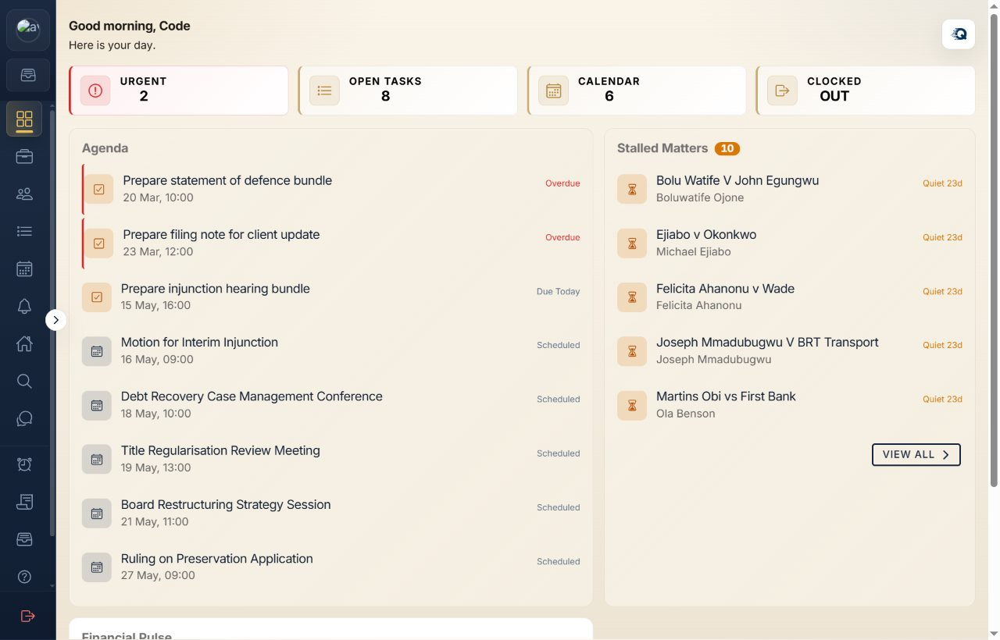
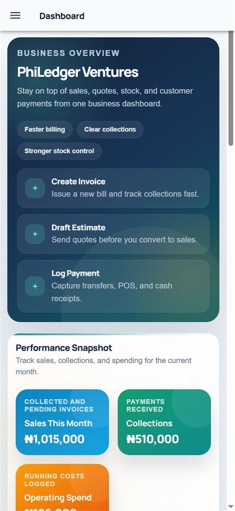
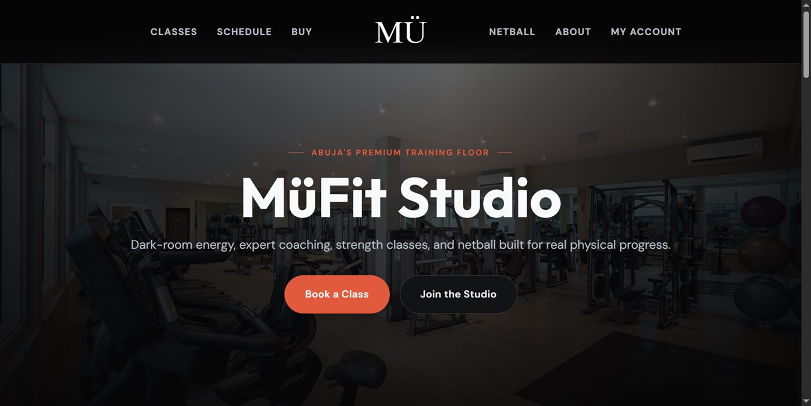

Product Engineer, Full-stack Product Engineer, or Product Builder.
SA
Sochima Afuba
View Parabolic Capital
Private product engineer profile
Sochima Afuba builds products that run real operations.
I build operational software across legal, hospitality, business records, civic data, events, fitness, local commerce, and internal developer tooling. Some products are live, some are still in active rollout; the work below is the record I can speak to.
I shape the workflow, design the screens, build the data and API layer, and keep refining until the product is usable.
The projects below are actual products I built, not placeholder demos.
How I work
I start by understanding the business process, then I build the simplest reliable version of it.
I am less interested in piling on features than in finding the core path: who uses it, what they need to record, what can go wrong, who approves it, and what the system must remember.
That has led me to build law-firm workspaces, signing flows, shortlet booking tools, hotel admin modules, invoicing and inventory software, city discovery and commerce, event administration, polling-unit search, fitness scheduling, and a local dashboard for running projects.
What I bring
Useful product engineering, from idea to working system.
Product shaping
I can turn "we need an app" into clear flows, data models, release slices, and the first version worth using.
Interface craft
I care about screens people can use every day: mobile density, empty states, failure states, and small details that reduce confusion.
Full-stack delivery
I move across client apps, APIs, auth, persistence, payments, notifications, documents, and deployment work when the feature needs it.
Operational thinking
I think in records, statuses, permissions, audit trails, reports, and handoffs because that is where real products need care.
Clear judgment
I can reduce scope, question assumptions, and keep the work pointed at the user instead of the biggest possible feature list.
Follow-through
I stay with the work past the first render: edge cases, copy, responsiveness, backend contracts, and rollout details matter.
Actual products behind this profile
These are the product families this profile is based on. I can discuss the decisions, tradeoffs, and implementation details behind them.
Legal systems
QuickProLaw and QPL Sign cover law-firm operations, document work, signing, contract execution, verification, and firm finance.
Hospitality systems
QuickProHost and Teddy City Hotels cover property inventory, direct booking, guest flows, admin operations, revenue, and notifications.
Business operations
PhiLedger covers estimates, invoices, payments, stock, expenses, reports, customer records, suppliers, and team access.
Consumer and community products
CityVibe, CodedEvents, PollingUnit, and MuFit Studio cover city discovery, events, civic lookup, fitness studio operations, member bookings, and attendance.
Selected product views
A few public and product surfaces behind the summary.




Product notes
Projects I can discuss in an interview.
- QuickProLaw
-
Legal operations software for law firms and departments: matter registry, court dates, tasks, documents, finance, staff activity, and execution workflow.
Website Web app - QPL Sign
-
Digital signing and contract execution layer with public signing paths, advanced contract flows, automation templates, verification records, and execution evidence.
Integrated with QuickProLaw - QuickProHost
-
Shortlet and property operations platform with public listing sites, owner workspace, booking holds, guest links, Paystack checkout, invoices, inspections, caution-fee returns, finance, and notifications.
Website Web app Mobile app in active rollout - Teddy City Hotels
-
Hotel operations system with rooms, bookings, admin users, snooker, swimming, kitchen orders, revenue tracking, and notification workflows.
Website - PhiLedger
-
Business suite for estimates, invoices, sales orders, purchase orders, delivery notes, payment logging, inventory, expenses, reports, and team roles.
Mobile app and walkthrough available - CityVibe
-
Urban lifestyle platform with consumer, business, and admin apps for venues, orders, reservations, loyalty, stays, ride links, and split-payment flows.
Domain cutover and apps in progress - CodedEvents
-
Event administration backend with Firebase auth, Supabase Postgres, role access, validation, audit logging, Swagger, Docker, and Cloud Run deployment paths.
Website - PollingUnit
-
Civic data workspace for polling-unit search and autocomplete, migrated from Mongo-style storage to Firestore-backed records.
Product walkthrough available - MuFit Studio
-
Fitness studio business with a public website and member app. The implementation covers classes, bookings, credits and purchases, netball programmes, instructor rosters, check-ins, admin operations, and server-backed product flows.
Website Mobile app walkthrough available - DevDash
-
Local developer operations dashboard for tracking projects, running services, watching files, and keeping multiple builds visible while working.
Private internal tool
Hiring note
I am strongest where product judgment and engineering execution have to happen together.
Several repositories are private because they contain product or client context. I can still walk through architecture, selected code, tradeoffs, and product decisions in a live interview.